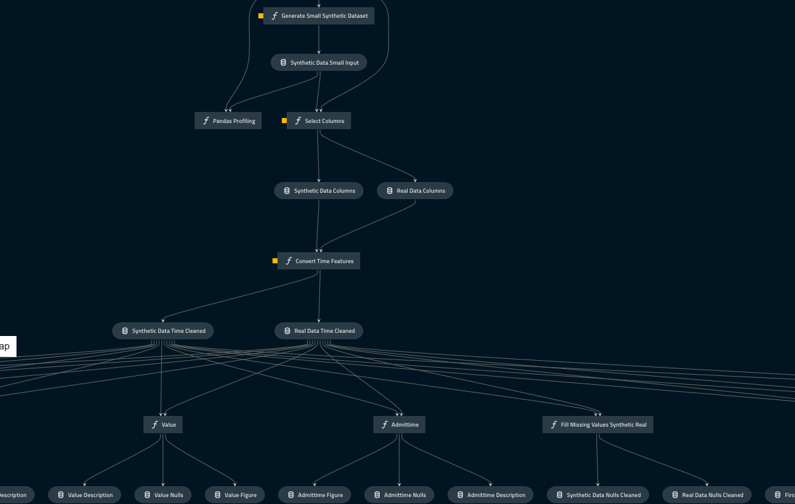

Projects
Playbooks
Team
Synthetic Data Generation Pipeline
Exploring how to create mock patient data from real patient data.

The NHS AI Lab Skunkworks team has been releasing open-source code from their artificial intelligence (AI) projects since 2021. One of the challenges faced with releasing code is that without suitable test data it is not possible to properly demonstrate AI tools, preventing users without data access from being able to see the tool in action.
One avenue for enabling this is to provide “synthetic data”, where new “fake” data is generated from real data using a specifically designed model, in a way that maintains several characteristics of the original data: Utility - is the synthetic data fit for its defined use? Quality - is the synthetic data a sufficient representation of the real data? Privacy - does the synthetic data ‘leak’ or expose any sensitive information from the real data?
The challenge…
This project aimed to provide others with a simple, re-usable way of generating safe and effective synthetic data to be used in technologies that improve health and social care.
Using real patient data for research and development carries with it safety and privacy concerns about the anonymity of the people behind the information. Various anonymisation techniques can be used to turn data into a form that does not directly identify individuals and where re-identification is not likely to take place. However, it is very difficult to entirely remove the chance of re-identification, so wide release of anonymised data will always carry some risks. Synthetic data removes the need for such concerns because there is no “real patient” connected with the data, so re-identification is not possible.
Using a synthetic data generation model called SynthVAE, produced by the NHS Transformation Directorate’s Analytics Unit,the Skunkworks team embarked on a joint project to produce a framework for generating synthetic data. The teams explored how SynthVAE could be used to generate synthetic data, how that data would be evaluated and how the whole process could be documented for others to re-use.
AI Dictionary
We have tried to explain the technical terms used in this case study. If you would like to explore the language of AI and data science, please visit our AI Dictionary.
Overview
There are many ways to generate synthetic data, with SynthVAE being just one approach. One common challenge with synthetic data approaches is that they are usually configured specifically for a dataset. This is a problem because it means a significant amount of work is needed to update them for use with a different data source. Additionally, once an approach has successfully produced data, it can be difficult to know whether what was generated using the approach is actually useful. Using approaches like SynthVAE currently requires rework of the source code each time a new dataset is used, and there is no standard set of checks that can be used for every dataset.
The work carried out jointly by NHS AI Lab Skunkworks and the Analytics Unit sought to: Increase the range of synthetic data types that SynthVAE can generate (like categorical data and dates). SynthVAE originally used the SUPPORT dataset from PyCox, so finding a dataset with a wider range of data types would be helpful. Create a standard series of checks that can be carried out on the data produced, so that a user can better understand the characteristics of the synthetic data produced Implement a structure to allow users to run the full functionality with a single piece of code.
What we did
The two teams worked together to:
- identify a suitable open source dataset for the project.
- use this data source to generate an “input dataset” that looks like real patient data
- adapt an existing synthetic code generator model (SynthVAE) and use it to produce synthetic patient data from the input dataset
- outline the checks that would need to be done to the synthetic data to confirm its quality and suitability
- pull these steps into a single user-friendly workflow process for anyone to use.
Creating an input dataset
In order to further develop the capabilities of SynthVAE since it was first produced, an input dataset containing a number of different data types was required in order to broaden the range of the data produced. The teams chose one already in the public domain. This meant people wishing to use the code after release could access and use the same dataset with which the project was developed. MIMIC-III was selected because the size and variety of its data would enable us to produce an input file that would closely match the broad range of typical hospital data.
We processed the raw MIMIC-III files to produce a single dataset which described treatment provided by a hypothetical set of patients. The resulting input file contained columns with numbers, categories and dates, as well as multiple entries for some patients. It looked similar to datasets that might be encountered in a real hospital setting, helping to keep this project as relevant as possible to potential stakeholders such as NHS data analysts and data scientists, as well as research teams within trusts who are interested in exploring the use of synthetic data.
Adapting SynthVAE
SynthVAE, the Analytics Unit’s “Variational Autoencoder for generating Synthetic Data”, uses an autoencoder architecture to train a model to compress the input data into a smaller number of variables, before attempting to reconstruct the original input information. Once the model is trained, the statistical distributions within the model are sampled and output data constructed from these samples. Due to the training process, the model tries to reconstruct output data that looks like the original training data.
SynthVAE was originally written primarily to generate synthetic data from both continuous data (data with an infinite number of values) and categorical data (data that can be divided into groups). The inclusion of dates in the new input dataset meant SynthVAE needed to be adapted to take the new set of variables.
Once this was done, it was possible to use the input file to train a SynthVAE model, and then use that model to generate synthetic data. The model was used to generate a synthetic dataset containing several million entries, a substantial increase on volumes previously produced using SynthVAE.
This wasn’t without challenges, as SynthVAE hadn’t been substantially tested using dates or large volumes of data. However, through close collaboration with the Analytics Unit, SynthVAE was successfully adapted to produce a synthetic version of the input data from MIMIC-III.
Creating a checking process
In order to evaluate the privacy, quality and utility of the synthetic data produced, a set of checks were needed. There is not currently an industry standard, so we chose to use an evaluation capability from Synthetic Data Vault (SDV), alongside other approaches which provide a broader range of assessments of the data. SDV’s evaluation capability provides a wide range of metrics which are already implemented, giving a starting point for building a more complete evaluation approach. SDV’s evaluation uses metrics to check whether your synthetic data would be a good substitute for the real data, without causing a change in performance (also known as the utility). The additional checks that were added aimed to make the evaluation of utility more robust, for example by checking there are no identical records in the synthetic and real datasets, but also to provide visual aids to allow the user to see what differences are present in the data.
The checks included:
- Collision analysis - checking that no two records are exactly the same in the input and synthetic datasets
- Correlation analysis - compares the relationship between the two datasets to see if patterns have been accurately preserved in the synthetic dataset
- Evaluating the Gower distance - looking at the closeness of similarity between the input and synthetic datasets to make sure they are not too similar
- Comparing each dataset using Principal Component Analysis - reducing the size of the data set to its principal components whilst keeping as much information as possible helps us see how similar the input and synthetic datasets are, and helps us to understand whether the synthetic dataset is useful
- Propensity testing - checking whether a model can differentiate between our real and synthetic data.We used a logistic regression model that had been trained on input data. We combined the real and synthetic data then fitted the logistic regression model to the data set. Using the fitted model, we could see how well it differentiated between the real and synthetic data by looking at its ability to predict how likely each row was real or synthetic.
- Comparison of the Voas-Williamson statistic - A global goodness of fit metric that compares the variation over degrees of freedom in the synthetic and ground truth data.
- Comparison of statistical distributions of the features - to get a high level view of the similarity of the two datasets, the categorical and numerical columns were compared visually. For a more in depth overview of both the real and synthetic datasets we used pandas-profiling to generate reports for each. Pandas profiling is a way of quickly exploring data using just a few lines of code instead of trying to understand every variable.
These checks were combined and their results collected in a web-based report, to allow results to be packaged and shared with any data produced.
Creating a pipeline
To make the end-to-end process as user-friendly as possible, QuantumBlack’s Kedro was employed. This is a pipelining library that allows functionality to be chained together, allowing a user to run a full set of scripts with a single command. It also allows a user to define all their parameters, features and settings in a configuration file, making it easier to know what is defined in the pipeline and how to change according to the needs of each user.
The input data generation, SynthVAE training, synthetic data production and output checking processes were chained together, creating a single flow to train a model, produce synthetic data and then evaluate the final output.
Outcomes and lessons learned
The resulting code, to be released as open source (available to anyone to re-use), enables users to see how:
- an input dataset can be constructed from an open-source dataset, MIMIC-III
- SynthVAE can be adapted to be trained on a new input dataset with mixed data-types
- SynthVAE can be used to produce synthetic data
- synthetic data can be evaluated to assess it’s privacy, quality and utility
- a pipeline can be used to tie together steps in a process for a simpler user experience.
By using the set of evaluation techniques, concerns around the quality of the synthetic data can be directly addressed and measured using the variety of metrics produced as part of the report. The approach outlined here is not intended to demonstrate a perfectly performing synthetic data generation model, but instead to outline a pipeline that enables the generation and evaluation of synthetic data. Things like overfitting to the training data, and the potential for bias will be highlighted by the evaluation metrics but will not be remedied.
Concerns around re-identification are reduced by using synthetic data, however they are not absolutely removed.To better understand the privacy of any patient data used to train a synthetic data generating model, the Analytics Unit have undertaken a project exploring the use of ‘adversarial attacks’ to prove what information about the training data can be ascertained from a model alone. The project focussed on a particular type of adversarial attack, a ‘membership attack’, and explored how different levels of information would influence what the attacker could learn about the underlying dataset, and therefore the implications to any individuals whose information was used to train a model.
What next?
AI Lab Skunkworks will be releasing the code from the project on our Github site to demonstrate how SynthVAE can be used in a practical, end-to-end configuration.
The Analytics Unit is continuing to develop and improve SynthVAE, with a focus on improving the model’s ability to produce high quality synthetic data.
Who was involved?
This project was a collaboration between the NHS AI Lab Skunkworks and the Analytics Unit within the Transformation Directorate at NHS England and Improvement.
The NHS AI Lab Skunkworks is a team of data scientists, engineers and project leaders who support the health and social care community to rapidly progress ideas from the conceptual stage to a proof of concept.
The Analytics Unit consists of a team of analysts, economists, data scientists and data engineers who provide leadership to other analysts who are working in the system and raise data analysis up the health and care system agenda.
| Output | Link |
|---|---|
| Open Source Code & Documentation | Github |
| Case Study | Case Study |
| Technical report | N/A |
| Algorithmic Impact Assessment | N/A |